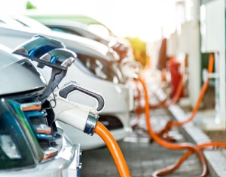
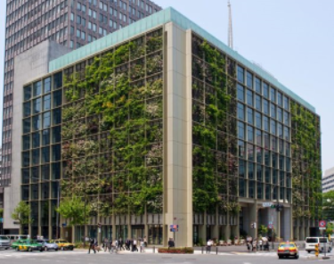
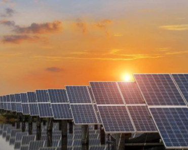
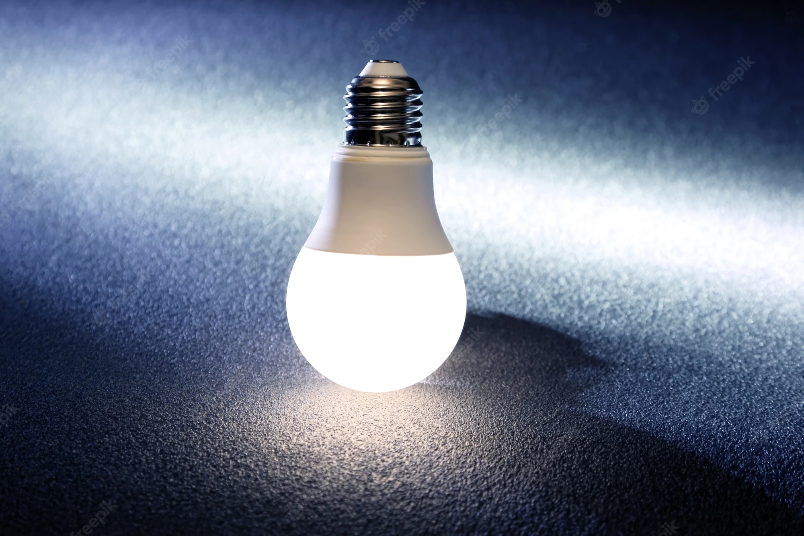
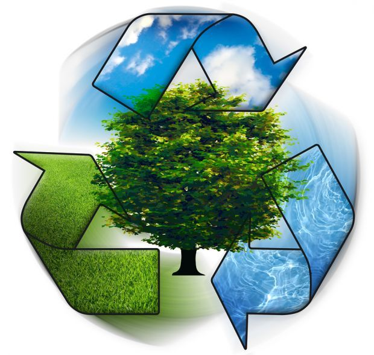
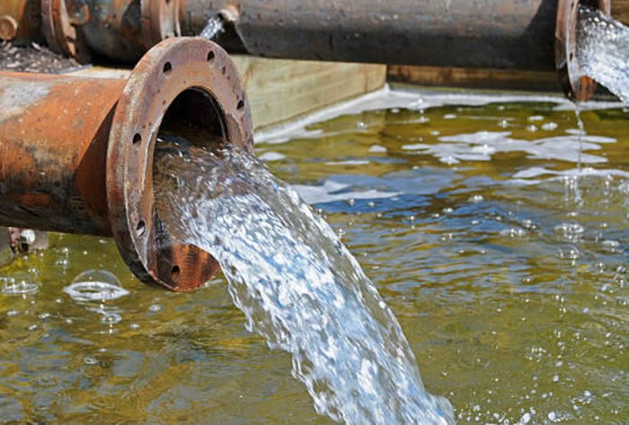

Sutentabilidade Tech
Veículos Elétricos
Esse tipo de veículos não emitem gases e são ecológicos, assim não sendo negativo ao meio ambiente. Os principais gases poluentes são: dióxido de carbono (CO2), monóxido de carbono (CO) e óxido de nitrogênio (NOx). Assim garantindo uma transição eficiente para transportes que também não produzem hidrocarbonetos não queimados (HC), compostos de chumbo e dióxido de enxofre. Os custos estão cada vez mais competitivos, aumentando a adoção dos veículos comerciais elétricos à bateria (BECVs) e veículos EV (electric vehicle).
Fazendas Verticais
Jardins instalados em edifícios e fazendas verticais no agronegócio são tecnologias sustentáveis para o meio ambiente que ajudam na economia de energia, além de trazer o desenvolvimento sustentável para os negócios. Os jardins verticais não precisam de rotinas de rega que desperdiçam água, isolam altas temperaturas (economizando energia para aquecer ou resfriar o ambiente) por serem instalados no ambiente externo e, também por isso, ainda reduz a poluição auditiva. Já as fazendas verticais promovem o cultivo verticalizado com tecnologias inovadoras que objetivam focar no desenvolvimento sustentável. Elas auxiliam a plantação sem uso de agrotóxicos, muita economia de água e melhor aproveitamento do terreno cuidando do solo fértil.
Energia Solar
A energia solar é acessível e um dos sistemas mais pesquisados de energia renovável trabalhados na atualidade. A cada ano, ela se torna mais barata e exemplar dentro das tecnologias de conversão existentes, deixando de ser apenas uma tendência ou novidade. Pessoas em todo o mundo sem acesso à eletricidade, principalmente em países na África Subsaariana e no Caribe, podem utilizar o aproveitamento da energia solar em novas tecnologias como célula solar de perovskita, células de filme fino, energia heliotérmica e células solares com pigmentos vegetais. Todas essas inovações exploram soluções renováveis para reduzir a dependência energética de combustíveis fósseis e gerar energia de forma mais econômica para milhões de pessoas.
Lâmpadas de LED
A iluminação LED diminui em até 50% as emissões de dióxido de carbono e tem eficiência energética. Ela substitui lâmpadas incandescentes tradicionais porque as lâmpadas LED reduzem o consumo de energia elétrica. Ou seja, uma lâmpada de LED usa menos energia que 25 lâmpadas incandescentes. O que ocorre é que luminárias desse tipo convertem mais de 80% da energia em luminosidade durante a noite. Por exemplo, uma lâmpada dicroica de 50W é igual a uma lâmpada LED de apenas 5W, mantendo a mesma luminosidade. Assim, há economia real no bolso produzindo menos energia e um menor prejuízo ao meio ambiente com a iluminação sustentável da tecnologia LED.
Reciclagem e Gestão de Resíduos
Os resíduos domésticos e industriais aumentam muito em aterros sanitários e a gestão se faz necessária para os resíduos sólidos. Tecnologias sustentáveis cada vez melhores evitam a contaminação do solo e do lençol freático eliminando os descartes indevidos com contêineres inteligentes que recebem qualquer tratamento, sistemas automatizados de rastreamento de resíduos alimentares e tecnologias de escaneamento óptico automatizado para separar o plástico de outros materiais. Essas inovações são essenciais, ainda mais porque 60% do lixo comum ainda contém resíduos eletrônicos que contaminam os recursos naturais. Inclusive, existe uma legislação no Brasil, a Política Nacional de Resíduos Sólidos (Lei nº 12.305/2010), que prevê o recolhimento desse lixo pelo próprio fabricante. Em fevereiro de 2020, foi aprovado também o Decreto n° 10.388 para que facilite que a lei seja cumprida, regulamentando o sistema de logística reversa.
Tratamento de Águas Residuais
Ainda existem poucos desenvolvimentos tecnológicos na área, então os investimentos desse tipo são importantes. Uma das tendências principais incluem as chamadas tecnologias vivas, baseadas na atuação de vegetais. As tecnologias vivas tratam a água que vem de vasos sanitários, pias, tanques e máquinas de lavar. Outras inovações envolvem a filtração por membrana, células de combustível microbianas, desenvolvimento de tratamentos biológicos, nanotecnologia e sistemas de tratamento natural (por exemplo, em pântanos). Os processos conhecidos tornam a água potável e também a água disponível para reuso, reduzindo significativamente o número de poluentes no processo de filtragem e tratamento. Além de diminuir essa presença de resíduos no que é lançado em mares e rios.